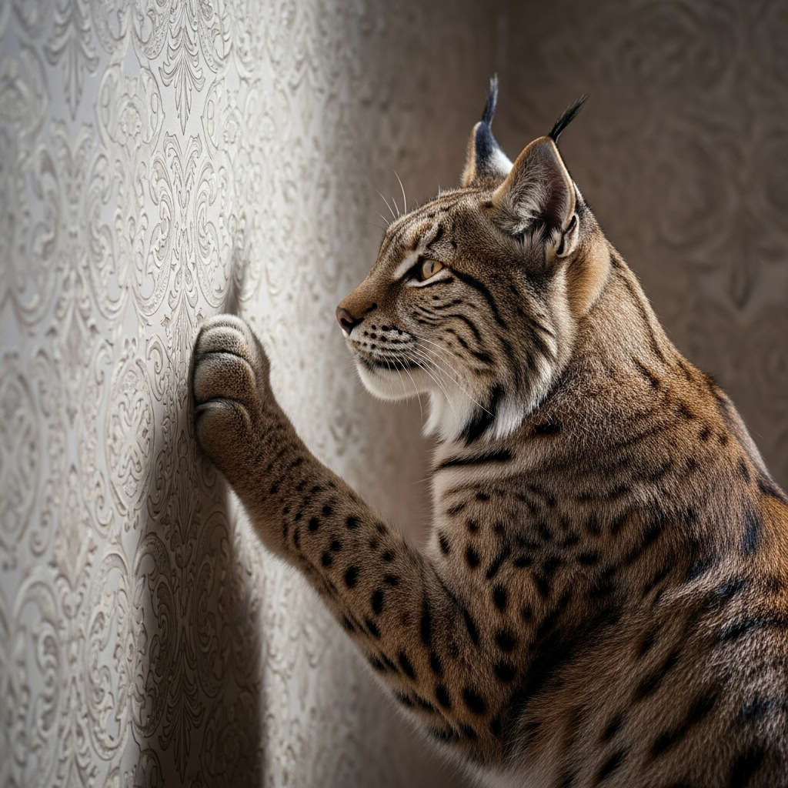

Ilves maiustas tapeediga– kodustatud metsakass Eino hoole all
Ilves koduloomana: Eino on päästnud ilvese, kes on nii kodunenud, et ronib mööda riiuleid ja isegi sööb tapeeti. Ilves on tavaliselt eraklik metsloom, kuid Eino hoole all on ta muutunud sõbralikuks kaaslaseks.
Kajakas nimega Sipsik: Talu „boss" on üheksa-aastane kajakas, kes tervitab külalisi nõudlikul linnutoonil. Kajakad ei ole tavaliselt kodulinnud, kuid Sipsik on selgelt erand.
Üle 30 linnuliigi: Talus elab rohkem kui kolmkümmend erinevat linnuliiki, mis on päästetud keerulistest olukordadest – see teeb Einost justkui väikese loomaaia pidaja.
Loe lähemalt
Allikas: Õhtuleht

Seenesaak on Eestis taas rikkalik-aeg on kummikud ja seenekorv välja otsida
Hilise suve-varajaste vihmasadude tõttu on Eesti metsades käes erakordselt hea seeneseen. Eksperdid soovitavad: "Seenel käia tuleks nuga, sest see võimaldab seentel edasi kasvada ja paljuneda. Seentel on maa all võrgustik, mida kahjustada ei tasu." Samuti hoiatatakse, et tuleks korjata ainult neid seeni, mida tunneb kindlalt.
Metsas liikudes tasub olla tähelepanelik ja mitte tallata seene kasvukohti, et säilitada nende elupaik.
Paljud söögiseened võivad segi minna mürgistega, seetõttu on seenemääraja või kogenud kaaslane suureks abiks.
Seeni tuleks korjata korvi.
Loe lähemalt
Allikas: maaelu.postimees.ee
Tilluke kääbusspits peletas tuppa tunginud karu pikema jututa minema
Kanadas Vancouveris filmitud südantsoojendav ja samas hämmastav video on vallutanud TikToki, tõestades, et tõeline julgus ei sõltu looma suurusest. Klipis astub pisike kääbusspits nimega Scout silmitsi suure musta karuga, kes on sattunud tema omaniku koduõuele. Ilma hetkegi kõhklemata tormab Scout karu poole, haukudes ja ajades end võimalikult suureks, justkui kaitseks ta oma territooriumi iga hinna eest.
Karule, kes ilmselgelt ei osanud sellist vastupanu oodata ja taganes ja lahkus tuldud teed.Näide sellest ,et vaprus ei ole seotud füüsilise jõu või suurusega vaid südikuse ja otsustavusega.
Loe lähemalt
Allikas: Postimees